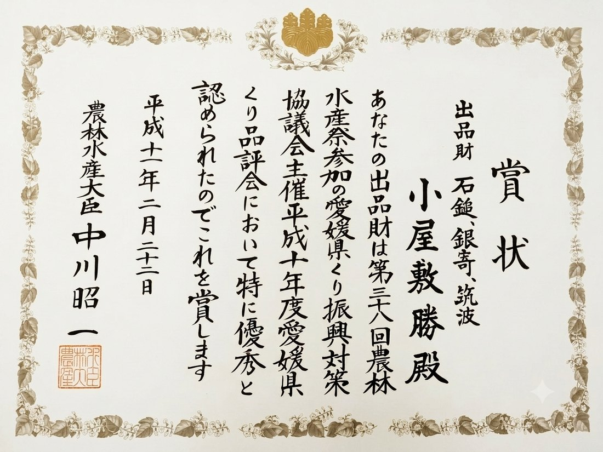
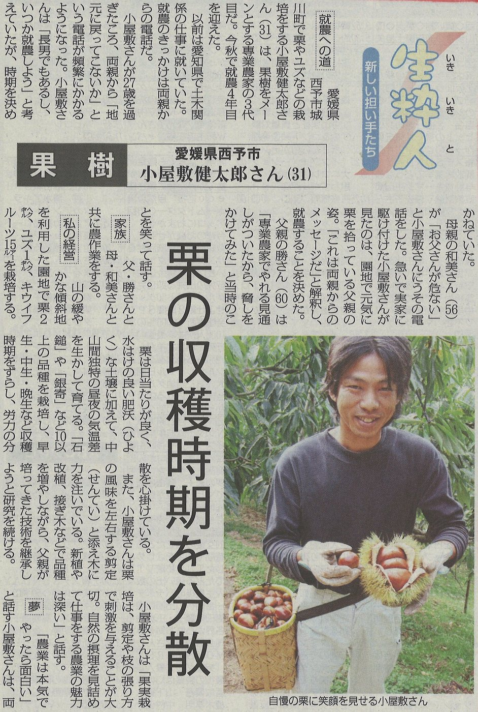
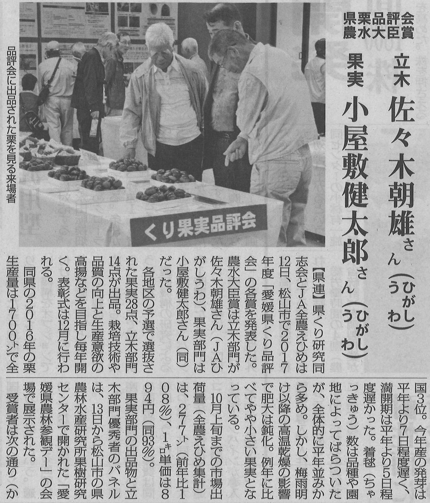

04 / MEDIA
受賞・新聞掲載
私たちが追求してきた「小屋敷クオリティ」の証として、これまでの受賞歴や新聞などの各種メディアに掲載された記録をご紹介します。
農林水産大臣賞 受賞
私たちの栗づくりの姿勢と品質が評価され、愛媛県くり品評会において、親子二代で最高賞である農林水産大臣賞を受賞いたしました。父・小屋敷勝が立木部門で、三代目・小屋敷健太郎が果実部門で、それぞれ農林水産大臣賞に輝いています。二代にわたり積み重ねてきた独自の栽培技術と、そこから生まれた大玉栗の優れた品質が公に認められた、農園にとって大変誇りある実績です。

新聞掲載
幻の品種「K2(改)俗称」を守り育てた私の挑戦や、伝統を守りながら品質向上を目指す私たちの地道な取り組みは、地元の新聞をはじめとするメディアでも大きく取り上げられ、注目を集めています。


掲載記事の著作権は各新聞社に帰属します。